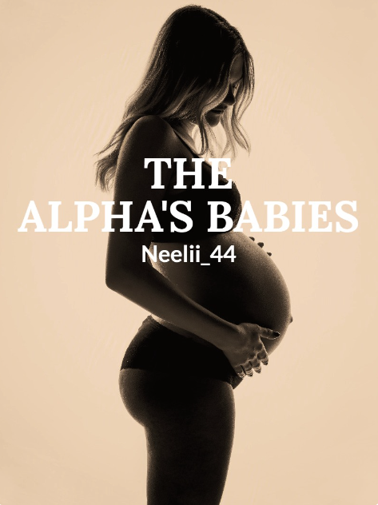

The Alpha's Babies
 After a night of pain, Skylar decides that she has endured enough.
Tired of his abuse she runs away from her possessive boyfriend not knowing that she isn't just his girlfriend.
She was his mate.
Reluctant to lose his mate Caine tracks, Skylar and finds her with a pack of rogues.
What was his human mate doing with a pack of rogues and why did her scent change?
Available on WebNovel
Access Book_Jailed : (The Accused)
cover.png)
She thought she was safe. But her past has found her.
Brianna Scott has tried to leave her old life behind, but when her past comes knocking, everything changes.
Now, as dark secrets resurface and the walls close in, Brianna must stay one step ahead. But in a place where trust is deadly, survival may come at a cost she’s not ready to pay.
Someone's watching. But who?
If you’ve ever wondered what happens when a split-second decision changes everything, Brianna’s story will keep you on the edge of your seat.
Experience the raw emotions, the high-stakes drama, and the gripping twists that make this tale impossible to put down. With heart-stopping moments and deep, relatable characters, this is more than just a story—it’s a journey of self-discovery and the power of choice.
Available on Amazon in Ebook and Paperback formats